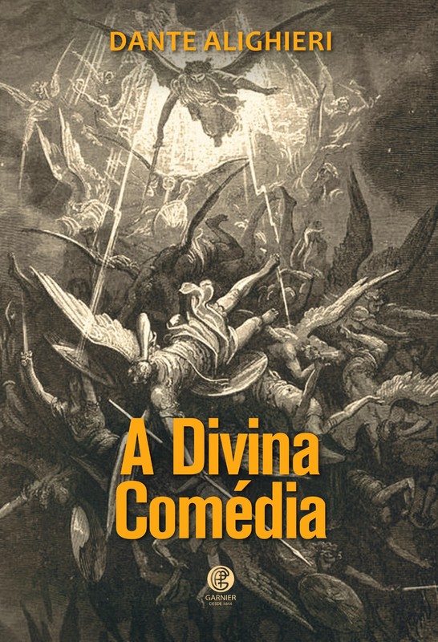
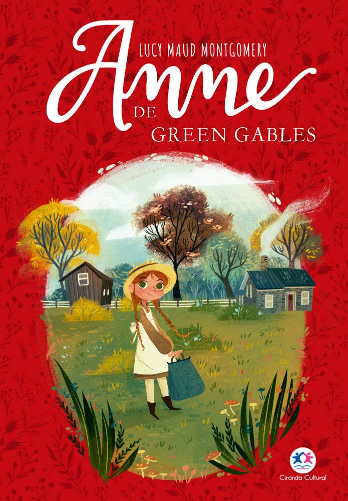

Selibi
Com mais de 25 mil votos o escritor e ilustrador Andre Neves foi escolhido com um grande homenageado da SELIBI 2025 - Semana do livro e da biblioteca da rede SESI SP. A votação contou com a participação de mais de 57 mil pessoas, entre bibliotecários, estudantes e professores.
Clique aqui e confira a matéria completa.
Dia Mundial do Livro: veja títulos cobrados nos vestibulares 2026
Nesta quarta-feira (23) celebra-se o Dia Mundial do Livro e dos Direitos Autorais, iniciativa da Organização das Nações Unidas para a Educação, a Ciência e a Cultura (Unesco) para promover a leitura, o livro e a proteção dos direitos autorais
Clique aqui e confira a matéria completa.
Papa Francisco tem duas autobiografias publicadas; conheça
O papa Francisco, primeiro pontífice latino-americano da história, lançou dois livros autobiográficos antes de sua morte: “Vida: minha história através da história” e “Esperança: a autobiografia”.
Clique aqui e confira a matéria completa.
40 anos de democracia: veja 10 obras que retratam período da ditadura
Redemocratização do Brasil teve início em 15 de março de 1985, com a posse de José Sarney na Presidência da República
Clique aqui e confira a matéria completa.
Nome completo:
Gabriela Caroline Da Silva
2º A
1234
• O prazo para a devolução do livro “Crepúsculo” será encerrado daqui 13h43min do dia 18/04/2025.
• Sua posição na fila para o livro O “Pequeno Príncipe” foi atualizada. Você encontra-se agora em 2º lugar.
Bella swan se muda para uma nova cidade e se apaixona por edward cullen, um misterioso colega de classe que é, na verdade, um vampiro, dando início a um romance intenso e perigoso entre mundos distintos.
18/03/2025 até 18/04/2025
moby dick narra a obsessão do capitão ahab em caçar a gigantesca baleia branca que lhe tirou a perna, mergulhando a tripulação do pequod em uma jornada sombria de vingança, destino e loucura.

Emprestado
na divina comédia, dante viaja pelos reinos do inferno, purgatório e paraíso, guiado por virgílio e beatriz, explorando a alma humana, a justiça divina e o caminho da redenção em uma jornada épica e espiritual.

Livre
anne of green gables conta a história de anne shirley, uma órfã sonhadora e cheia de imaginação que é acidentalmente enviada para viver com dois irmãos em uma fazenda em avonlea, transformando a vida de todos ao seu redor com sua personalidade vibrante e coração generoso.

Livre
Harry Potter e a Pedra Filosofal, de J.K. Rowling, segue Harry, um órfão que descobre ser bruxo e entra para Hogwarts. Com amigos, ele desvenda o mistério da Pedra Filosofal, enfrentando perigos para impedir que caia nas mãos do mal.
Emprestado
Orgulho e Preconceito, de Jane Austen, é um romance sobre Elizabeth Bennet e Sr. Darcy, que superam orgulho, preconceitos e diferenças sociais para encontrar amor na Inglaterra do século XIX. Uma crítica sutil à sociedade com diálogos afiados.

Livre
Jogos Vorazes, de Suzanne Collins, segue Katniss Everdeen, que enfrenta os mortais Jogos Vorazes da Capital. Com coragem, ela sobrevive e se torna símbolo de resistência contra a opressão, em um mundo de desigualdade e sacrifício.

Emprestado